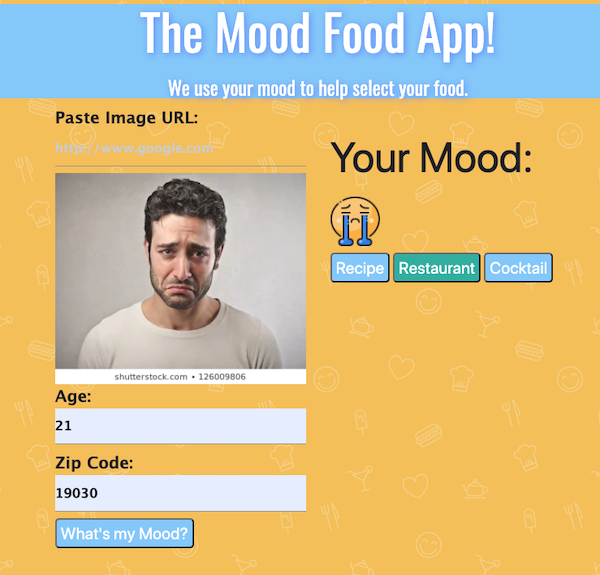
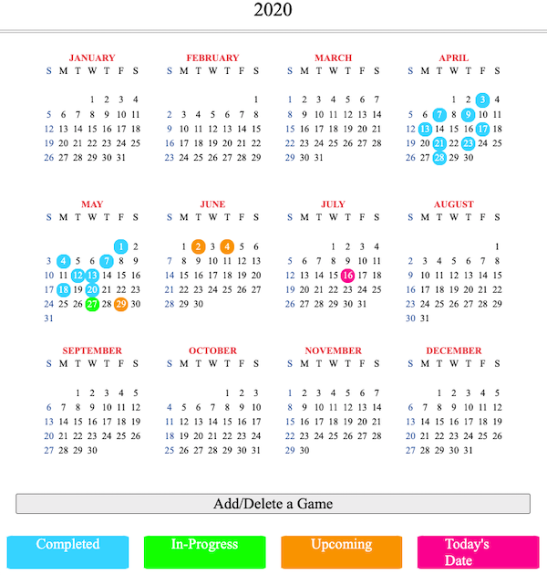
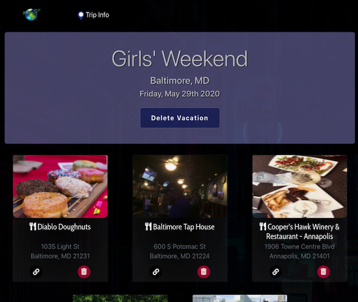

Heather Gowton
Full-Stack Web Developer
Exploration + Synergy = Critical Problem Solver
Helping people has always been one of my biggest passions. First in Girl Scouts and leading into becoming a teacher. I never would have guessed by life would lead me into coding. In fact I rememeber adamantly despising everything to do with the computer throughout my grade school and even college years. It wasn't until getting a teaching job at a cyber charter school in Pennsylvania, that I really started to see how important technology is to my passion. After developing 5 online curriculums in Moodle and being an online science teacher for 9 years I realized my talents could be used to help the entire school. At that time I transitioned into Instructional Systems Design, at the same online charter school where I had been teaching.
Life has again thrown some unpredicted curve balls straight at my head. Causing me to shift focus once again. I have enrolled in UPenn's Full Stack Web Development BootCamp to help me with the next phase.
Featured Projects
Imagination is innate within all of us. Indulge it, express it, fuel it! For what wants to living a world without creativity?
Mood Food
Application identifies restaurants or cocktail locations to have food or drink. Users have access to creating recipes at home based on the user’s mood.
Responsiblities: API research and implementation, including how information from API is organized on page.
Tech Used: Javascript, CSS, HTML, JQuery
Little League Logger
An MVP based application for a baseball team. This application keeps all team members and their family members up-to-date on upcoming, current, and past games.
Responsiblities: Development of individual game-score pages for coach and general user stories.
Tech Used: Express Sessions, MySQL, JavaScript, and Express, and Node.js
Where To?
A MERN travel application designed to help locate, organize, and keep track of activities of interest for the user.
Responsibilties: Team role focused on research and implementation from client to server and back for APIs, utilization of Styled-Components, Bootstrap, React-Card-Flip to ensure clean user experience, database retrieval of activity information.
Technology Used: React.js, Passport & JWT authentication, and AWS S3 bucket.
Work Experience
A passionate Full Stack Developer with a background working in the education sector and instructional system design industry. Experienced Front End Developer utilizing languages in HTML and CSS for three years building curriculums in the learning management system Moodle. Recently received a certificate in Full Stack Web Development from the University of Pennsylvania, which enabled me to round out my skills with JavaScript, React, MongoDB, and MySQL. Collaborated with multiple teams to develop and maintain a clear, engaging, and welcoming user interface. Known for perseverance, leadership, creativity, presentation skills, critical eye, and being team-focused. Web Design enables me to help individuals, teams, and corporations by giving life to their vision while feeding my thirst for knowledge and personal growth.
Job title
Company Name
Date at job
Job summary goes here. Add as many paragraphs as you need.
Optional list:
- Delete this list if you don't need it.
- Created...
- Lead...
- Responsible for...
Education
School name - City
Designation received or program name, year attended
Summary or accomplishments.